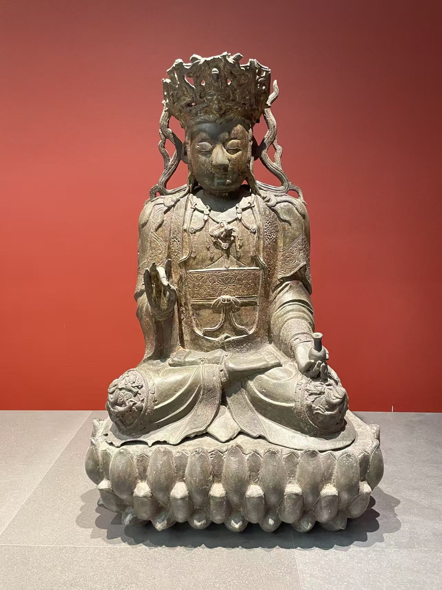
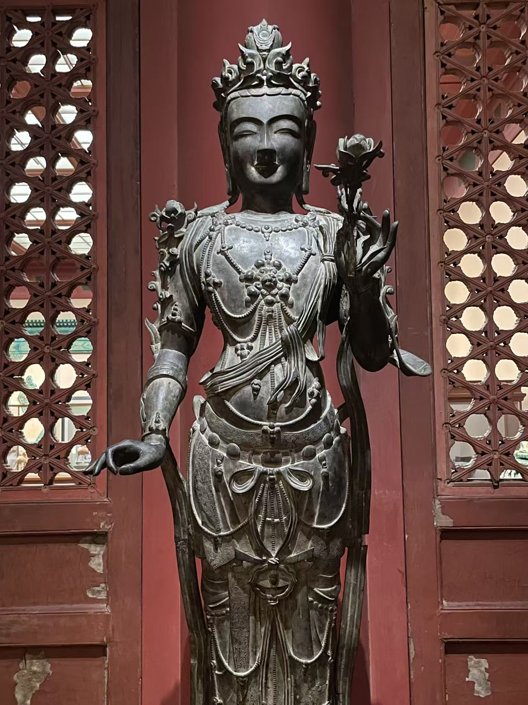

MUSEUM NOTES / MATERIAL
金属造像
逐件注明金属、合金、髹漆与鎏金信息。
3 件造像 · 持续补充
THE COLLECTION
在展厅里遇见
保留全貌，也留住每件作品的不同。
共 3 件造像
没有找到符合条件的作品。试试更短的关键词，或清除筛选。


堪萨斯城 · 纳尔逊－阿特金斯艺术博物馆33
菩萨立像
Bodhisattva
- 年代
- 明，1368—1644年
- 材质
- 青铜，残存贴金
- 编号
- 39-26
花枝、手势和繁复首饰突出于身体之外；深色铜面使轮廓格外清楚。
作品札记与资料
展签指出，持莲花的姿态接近莲花手菩萨，但冠上日月图案也可能指向其他尊格，具体身份尚不确定。
基本信息据现场展签整理；照片 © Merton。

巴尔的摩 · 巴尔的摩美术馆43
水月观音
Water-Moon Guanyin (Shuiyue Guanyin)
- 年代
- 明，15世纪
- 材质
- 金属合金，原有鎏金及蓝、红彩绘
- 编号
- BMA 1944.80
右前臂横搭在高起的膝上，手指向下垂落；左手撑住座面，衣裙沿另一条腿落向赤足。面部的金色与深暗的像身相接，让低垂的目光格外清楚。
作品札记与资料
从宋金木雕转到这尊明代金属像，熟悉的一膝高起、单手后撑仍在，衣褶却形成另一种厚重而连贯的节奏。胸前的璎珞、臂上的饰件与足边层叠的衣缘，可以从正面看，再绕到侧面重看。这里的舒展不只是一个姿势：手臂把身体向外打开，微低的头又把视线收了回来。
水边观月的形象
馆方明确将本件定名为水月观音，并把这一形象联系到水畔岩窟与月影。画面中的山水，在雕像中可以收束为身体的姿态和坐处；这尊像保留了可与木雕主线比较的手臂、膝部与撑座关系。
观看与收藏
本件由作者在巴尔的摩美术馆亲见、拍摄，展签列入藏资助为 Julius Levy Memorial Fund。它与同城沃尔特斯艺术博物馆的干漆观音是不同作品；具体参观日期、原供奉寺院及完整流传记录暂未确认。
现场展签采用“金属合金”；馆方2015年教育资料称青铜。本页沿用实拍展签，未据此推定合金比例。展签所列河北“Wan Bing County”为地域记录，目前未据此认定具体出土地点。
 查看大图 ↗
查看大图 ↗ 查看大图 ↗
查看大图 ↗ 查看大图 ↗
查看大图 ↗ 查看大图 ↗
查看大图 ↗基本信息据现场展签整理；照片 © Merton。